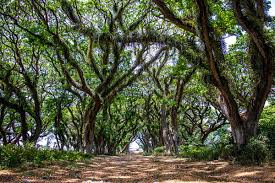
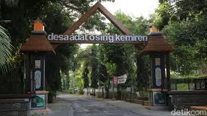
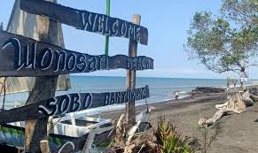

FASILITAS
 KAWAH IJEN
Fasilitas Utama di Area Paltuding (Basecamp):
Toilet dan Mushala: Fasilitas umum seperti toilet dan tempat ibadah tersedia di kawasan ini.
Parkir: Terdapat area parkir yang luas untuk kendaraan pengunjung.
Warung Makan: Berbagai warung makan dan minuman tersedia untuk wisatawan yang ingin makan sebelum atau sesudah mendaki.
Penyewaan Peralatan Mendaki: Anda bisa menyewa perlengkapan yang diperlukan seperti masker gas dan senter kepala di sini.
Camping Ground: Tersedia lahan untuk berkemah bagi pengunjung yang membawa tenda atau menyewa di lokas
KAWAH IJEN
Fasilitas Utama di Area Paltuding (Basecamp):
Toilet dan Mushala: Fasilitas umum seperti toilet dan tempat ibadah tersedia di kawasan ini.
Parkir: Terdapat area parkir yang luas untuk kendaraan pengunjung.
Warung Makan: Berbagai warung makan dan minuman tersedia untuk wisatawan yang ingin makan sebelum atau sesudah mendaki.
Penyewaan Peralatan Mendaki: Anda bisa menyewa perlengkapan yang diperlukan seperti masker gas dan senter kepala di sini.
Camping Ground: Tersedia lahan untuk berkemah bagi pengunjung yang membawa tenda atau menyewa di lokas

DJAWATAN
Fasilitas Umum
Area Parkir Luas: Tersedia untuk kendaraan pribadi seperti motor dan mobil.
Toilet dan Musala: Fasilitas penting untuk kenyamanan pengunjung dan tempat beribadah bagi umat muslim.
Warung dan Kafe: Menyediakan makanan dan minuman untuk pengunjung.
Gazebo: Tempat untuk bersantai dan menikmati suasana hutan.
WiFi Gratis: Fasilitas untuk pengunjung tetap terhubung dengan internet.

DESA ADAT OSING KEMIREN
Fasilitas Umum
Area Parkir: Tersedia parkir luas untuk kendaraan roda dua dan roda empat.
Toilet dan Mushola: Fasilitas sanitasi dan tempat ibadah tersedia untuk kenyamanan pengunjung.
Warung Makan dan Kios: Banyak pilihan makanan dan minuman, termasuk makanan laut dan hidangan khas Banyuwangi.
Kios Suvenir: Anda bisa menemukan berbagai oleh-oleh khas.
Gazebo dan Tempat Duduk: Area santai untuk menikmati pemandangan pantai.

PANTAI SOBO WONOSARI
Fasilitas di Desa Adat Osing Kemiren meliputi penginapan homestay, warung makan dan kafe yang menyajikan kuliner
khas Osing, sanggar seni seperti Sanggar Sapu Jagad dan Genjah Arum untuk aktivitas budaya, museum desa dengan koleksi
peninggalan leluhur, serta fasilitas umum seperti balai pertemuan, musholla, tempat parkir, dan pusat informasi.
 PANTAI BOOM
Fasilitas Umum
Area Parkir: Tersedia parkir luas untuk kendaraan roda dua dan roda empat.
Toilet dan Mushola: Fasilitas sanitasi dan tempat ibadah tersedia untuk kenyamanan pengunjung.
Warung Makan dan Kios: Banyak pilihan makanan dan minuman, termasuk makanan laut dan hidangan khas Banyuwangi.
Kios Suvenir: Anda bisa menemukan berbagai oleh-oleh khas.
Gazebo dan Tempat Duduk: Area santai untuk menikmati pemandangan pantai.
PANTAI BOOM
Fasilitas Umum
Area Parkir: Tersedia parkir luas untuk kendaraan roda dua dan roda empat.
Toilet dan Mushola: Fasilitas sanitasi dan tempat ibadah tersedia untuk kenyamanan pengunjung.
Warung Makan dan Kios: Banyak pilihan makanan dan minuman, termasuk makanan laut dan hidangan khas Banyuwangi.
Kios Suvenir: Anda bisa menemukan berbagai oleh-oleh khas.
Gazebo dan Tempat Duduk: Area santai untuk menikmati pemandangan pantai.
PULAU Merah
Fasilitas Umum
Fasilitas Umum:
Penyewaan Perlengkapan Surfing: Pengunjung bisa menyewa papan selancar untuk mencoba berselancar di ombak Pulau Merah.
Penyewaan Perahu: Pengunjung bisa menyewa perahu untuk berkeliling pantai dan menikmati keindahan dari tengah laut.
Perlengkapan Berjemur: Tersedia tempat tidur atau payung untuk bersantai menikmati matahari.
Spot Foto: Banyak spot menarik yang cocok untuk mengabadikan momen liburan.
Fasilitas Lainnya:
Camping Ground: Bagi yang ingin berkemah dan menikmati suasana malam di pantai.
Area Bermain Anak: Tersedia bagi pengunjung yang datang bersama keluarga. .